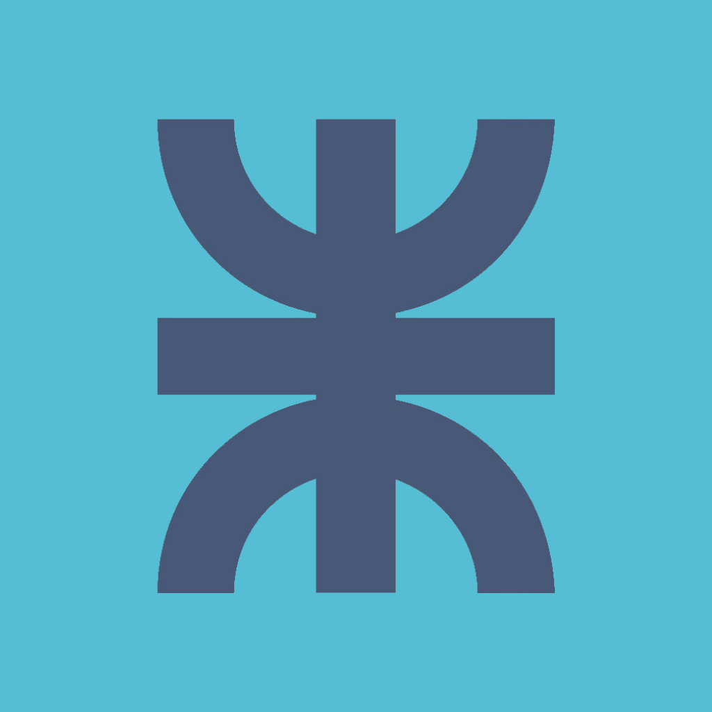

<ion-menu [content]="content">
    <ion-header>
            
    </ion-header>
    <ion-content>
          
        <button ion-button clear block (click)="cerrarSesion()">Cerrar Sesión</button>
    </ion-content>
  </ion-menu>
  
  <ion-nav id="nav" #content [root]="rootPage"></ion-nav>
